Articles
Information on common conditions and how we address them with manual therapy at Kinésica. Choose a topic to read the full article.
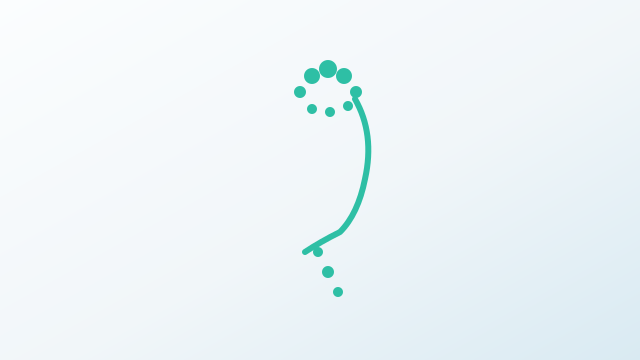
Headache Headaches may originate from the neck, muscle tension or the jaw. An integrated approach helps reduce both intensity and frequency. Read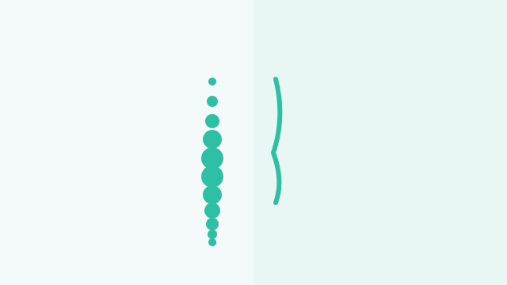
Upper back pain Dorsalgia is pain in the mid/upper back. It often relates to sustained posture, thoracic stiffness and muscle overload. Read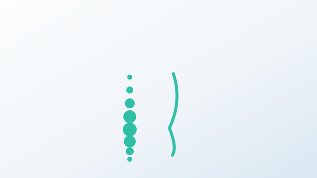
Low back pain Low back pain is one of the most common complaints. The goal is to understand triggers and restore mobility and strength without fear of movement. Read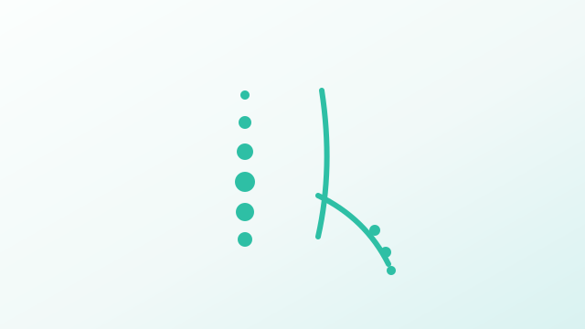
Ciatalgia Ciatalgia often feels like pain, burning or tingling down the leg. It doesn’t always mean a serious injury, but it does need a clear assessment. Read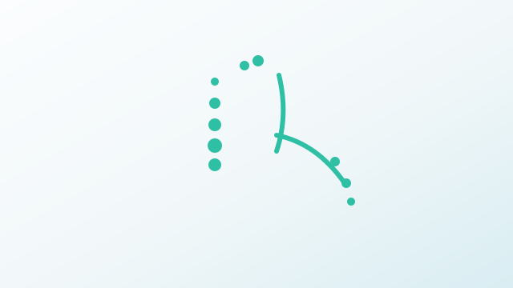
Cervicobrachialgia When pain starts in the neck and travels to the shoulder or arm, nerves, joints and posture are often involved. Read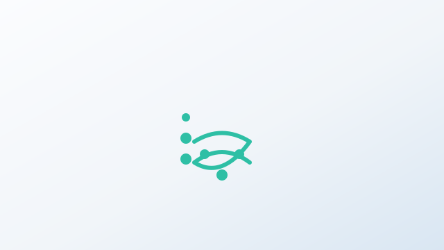
Pubalgia Pubalgia is groin/pubic pain often seen in sports, but also in people with hip and pelvic overload. Read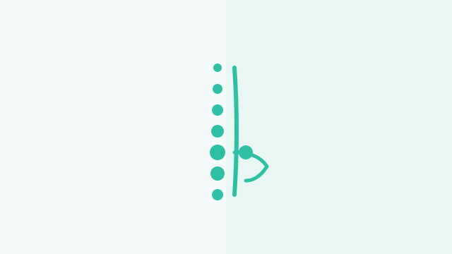
Knee pain Knee pain depends on the knee and on how the hip, foot and posture work together. A strong plan targets drivers, not only symptoms. Read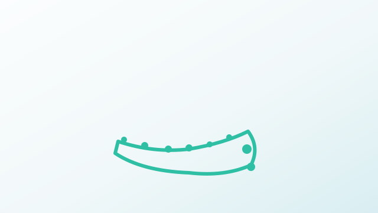
Heel pain Heel pain can affect every step. Understanding foot mechanics and global loading helps recovery. Read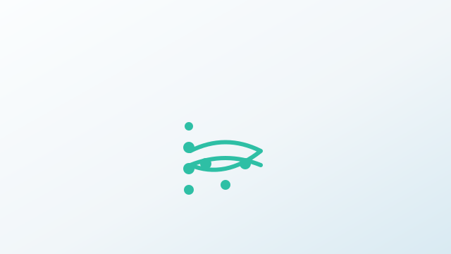
Sacroiliac pain Pain near the sacrum and buttock may relate to the sacroiliac region and how load is distributed through pelvis, hip and spine. Read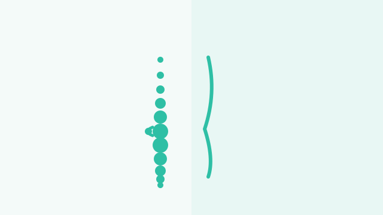
Disc herniation A disc herniation may cause back or neck pain and sometimes symptoms down a limb. A progressive plan helps you regain function safely. Read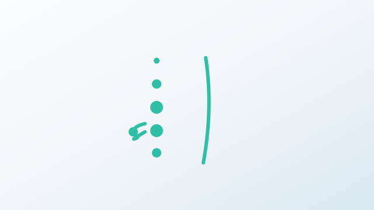
Disc protrusion A disc protrusion may be linked to pain and stiffness. With assessment and progression, function and confidence can improve significantly. Read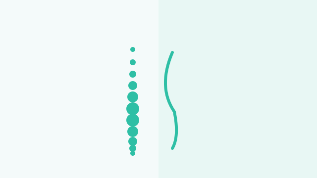
Hyperkyphosis Hyperkyphosis is an increased thoracic curve often associated with a rounded posture, upper back stiffness and discomfort. Read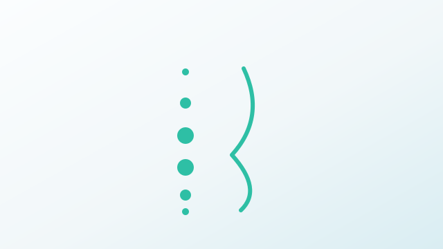
Hyperlordosis Hyperlordosis is an increased lumbar curve. It isn’t inherently bad, but it can be linked to overload and pain when control and mobility are limited. Read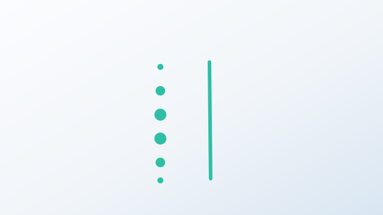
Flat back A flatter thoracic curve is often linked to stiffness. Improving mobility and control helps reduce overload in the neck and low back. Read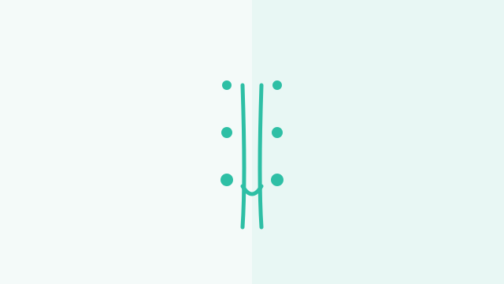
Knee valgus Knee valgus is a tendency for knees to move inward. Rather than chasing a perfect shape, we train control and load distribution. Read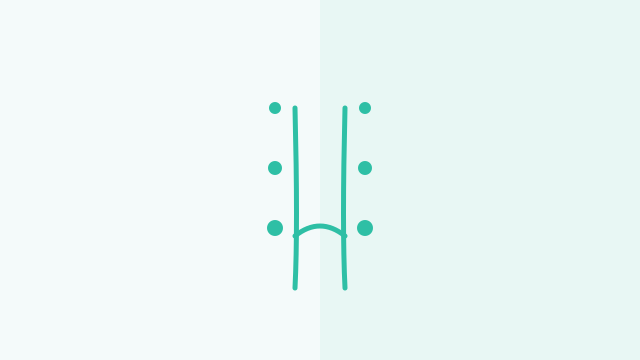
Knee varus Knee varus describes a more outward alignment. We focus on mobility, strength and mechanics to improve load tolerance and comfort. Read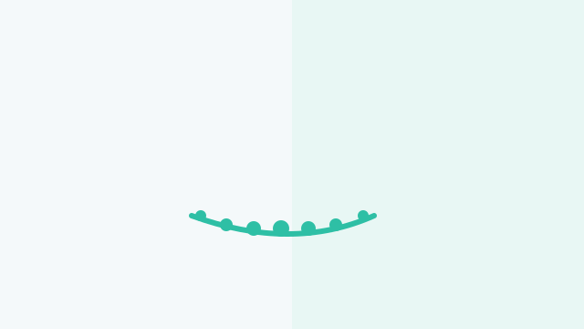
Flat feet A lower arch isn’t always a problem. What matters is load tolerance and whether symptoms appear with walking or training. Read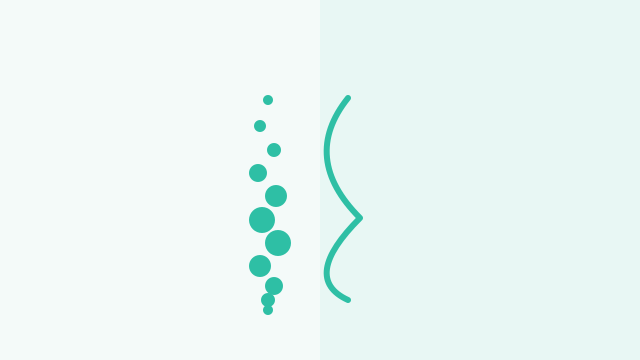
Scoliosis Scoliosis is a three-dimensional spinal curve. Physiotherapy focuses on mobility, strength and pain management in daily life. Read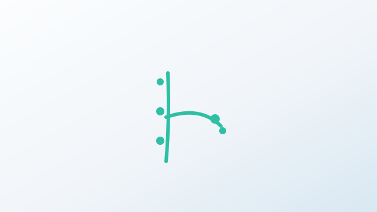
Tennis elbow Tennis elbow isn’t only for athletes: it can come from keyboard work, tools or repetitive forearm loading. Read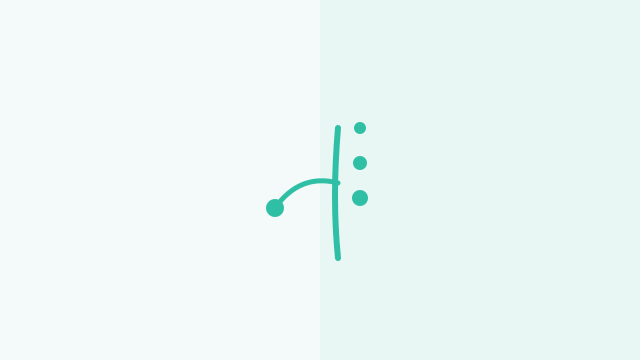
Golfer’s elbow Medial epicondylitis is inner elbow pain often driven by overuse and repeated gripping. Read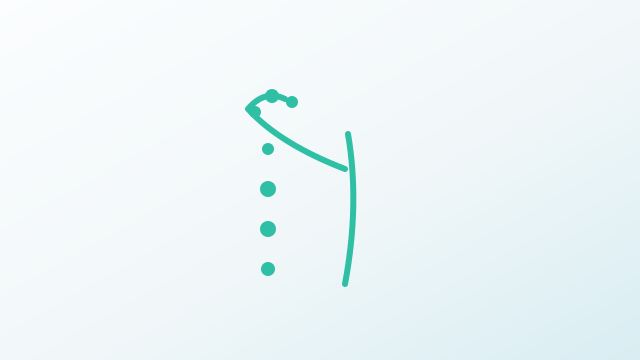
Subacromial impingement Pain when lifting the arm is often related to shoulder and scapular mechanics. Improving movement control and strength is usually key. Read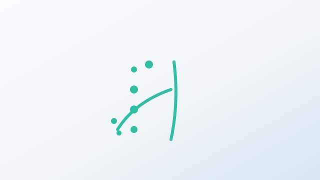
Rotator cuff The rotator cuff stabilizes the shoulder. Overload can cause pain and weakness, especially with lifting or rotation. Read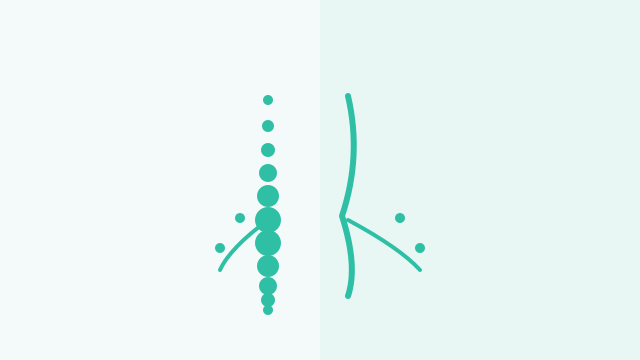
Radiculopathy Radiculopathy can cause radiating pain, tingling or weakness. A precise assessment helps dose treatment without flaring symptoms. Read Meniscopathy Meniscus-related symptoms may include pain, swelling or catching. Rehab aims to restore motion and load tolerance progressively. Read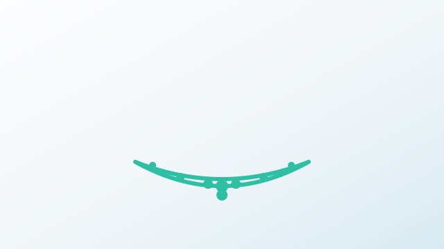
Plantar fasciitis Plantar fasciitis often hurts with first steps in the morning. With progressive loading, the foot can rebuild tolerance and function. Read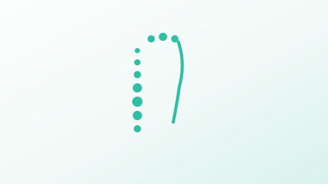
Neck pain Neck pain is often linked to tension, stiffness and sustained posture. An integrated approach restores mobility and reduces recurrence. Read“The body stores the memory of all our experiences”
Contact us and book an appointment
Before the first session we can chat to clarify any questions.